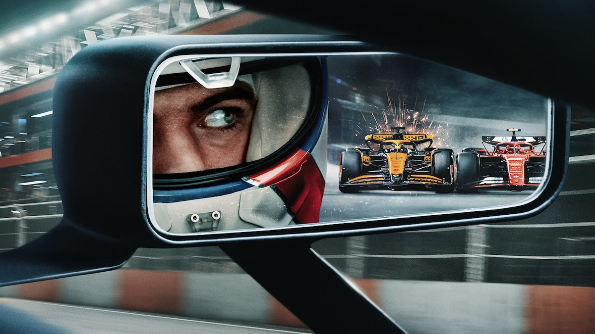
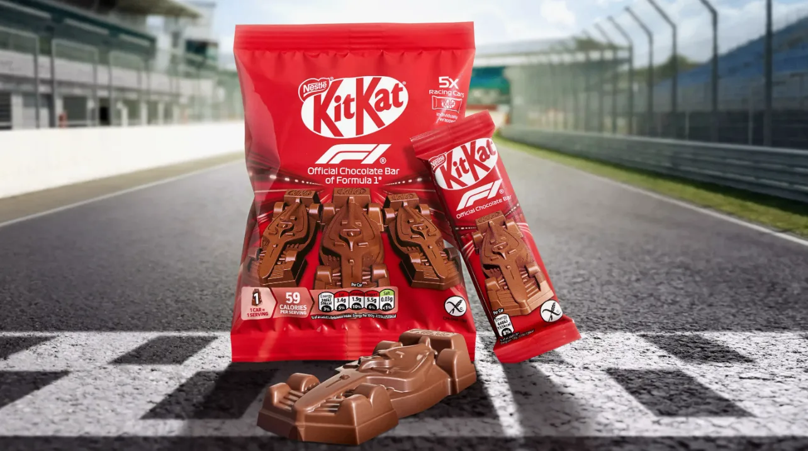

Как маркетинг спас Формулу-1
И почему её теперь смотрят даже те, кто не любит спорт. Про Netflix, шоколадный Kit Kat, LEGO-гонки и спонсорские миллионы.
И почему её теперь смотрят даже те, кто не любит спорт. Про Netflix, шоколадный Kit Kat, LEGO-гонки и спонсорские миллионы.
Лет 20 назад Формула-1 казалась чем-то из другого мира. Не в плохом смысле — просто не для всех. Паддок, закрытые вечеринки, яхты, Кими Райкконен, который после схода на Гран-при Монако просто уходит на свою яхту, пришвартованную рядом. Красиво, но как будто не про обычных людей.
Трансляции платные, билеты дорогие, атмосфера — «королевская гонка» для тех, у кого есть связи и бюджет. Я раньше думала: ну ок, это просто спорт для избранных. Не моя история.
А потом что-то сломалось. В хорошем смысле. В 2018 году я впервые поехала на F1 в Сочи — и понеслось.
В 2017 году Формулу-1 купила Liberty Media — американская компания, которая, по сути, купила не просто гоночную лигу, а неиспользованную глобальную интеллектуальную собственность. И начала делать то, что до этого казалось почти кощунством: превращать закрытый клуб в массовое развлечение.
Первым делом Liberty Media три месяца изучала аудиторию чемпионата и выяснила простую вещь: фанаты хотели больше закулисья, хотели видеть гонщиков не только в шлемах, но и в жизни. Так появился сериал «Formula 1: Drive to Survive» на Netflix — вышел в 2019-м и сделал то, чего не смогли сделать десятилетия трансляций: показал не только гонки, но и людей. Драмы, конфликты, характеры, закулисье команд.
И это сработало. После выхода сериала продажи билетов на Гран-при Мексики выросли — промоутеры напрямую связали это с показом «Drive to Survive». Интерес женской аудитории вырос на 30%. Глобальная база фанатов увеличилась на 63% по сравнению с 2018 годом.
Заодно Liberty Media пересмотрела контракты на трансляции. ESPN в США раньше платил символические $5 млн в год — новый контракт оценивается в $75–90 млн ежегодно. Sky Sports теперь платит около $300 млн в год вместо прежних скромных сумм. Гонки превратились в медийное событие на весь уикенд, а не просто в воскресное шоу.

Увеличение зрителей — это не просто красивая цифра для презентаций. Это прямой доступ к спонсорским деньгам. В среднем 42% бюджета команды составляют спонсорские средства. Чем больше аудитория — тем выше ставки, которые команды могут запросить у брендов.
В 2021 году официальные спонсорские контракты (трековая реклама, мерч и права F1) принесли $340 млн. Команды считают свои машины «рекламной витриной» и продают места для логотипов за суммы от $1 млн до $50 млн. Партнёры приходят за ассоциацией с ценностями спорта: инновации, скорость, точность.
Liberty Media создала мощную спонсорскую экосистему — бренды размещаются не только на машинах, но и в цифровых активах, контенте, на трассах, в технологиях. Crypto.com стал титульным спонсором спринт-заездов F1 Sprint в Майами. Santander разместил логотипы на трассах в США, Бразилии, Мексике, Испании и Великобритании. С 2025 года TAG Heuer заменит Rolex в качестве официального хронометриста. Даже LVMH подписал партнёрство с Формулой-1 на 10 лет.
Вот тут самое интересное.
Это уже не «папин спорт». Это контент, который живёт в TikTok, Instagram и Twitch. Формула-1 перестала быть просто гонкой и стала медиапродуктом: постоянным потоком контента, историй и эмоций.
Вот где маркетинг становится по-настоящему осязаемым.
В январе 2025 года на заводе Nestlé в Италии с конвейера сошёл болид Формулы-1, сделанный из 350 кг шоколада Kit Kat — в натуральную величину, с точностью до ливреи. Через несколько недель его выставили у трассы на открытии сезона в Мельбурне. Это не просто «спонсорский логотип на машине» — это физический объект, о котором пишут, который фотографируют и который обсуждают. Kit Kat подписал контракт с F1 в ноябре 2024 года, приурочив его к своему 90-летию и 75-летию Формулы-1. Соглашение рассчитано до 2028 года и охватывает 12 гонок на ключевых рынках Nestlé.

LEGO пошли ещё дальше. В сентябре 2024 года они объявили о партнёрстве, которое покрывает все 10 команд на стартовой решётке — от доступных мини-машинок до премиальных наборов Technic для взрослых фанатов. На Гран-при Майами 2025 года LEGO построили 10 полноразмерных управляемых болидов F1 — по одному на каждую команду, каждый из более чем 400 000 деталей, с полной спонсорской ливреей, на настоящих шинах. 20 гонщиков проехали на них в параде пилотов.
И это сработало. Активация сгенерировала $14 млн спонсорской медиастоимости за один день. Впереди Гран-при Китая LEGO превратили пешеходную зону Нанкин-Роуд в поп-ап «F1 Speed Station», полностью воссоздав трассу, пит-стопы и гаражи команд из кирпичиков LEGO. А к сезону 2026 в Шанхае обернули вагон метро в полноразмерный болид F1 с встроенным LEGO-гаражом и более чем 20 пасхалками.
CEO LEGO Нильс Кристиансен назвал партнёрство с F1 одной из инноваций, обеспечивших компании рекордную выручку и операционную прибыль в первом полугодии.
Самое крутое в этой истории — не цифры. А то, что маркетинг здесь не «продал» спорт. Он раскрыл его. Показал, что за болидами стоят люди: с амбициями, обидами, юмором и драмами. И оказалось, что это интересно не только фанатам автоспорта.
Формула-1 не стала «проще» или «хуже». Она стала доступнее. И это, по-моему, отличный пример того, как правильный сторителлинг может оживить даже самую закрытую индустрию.